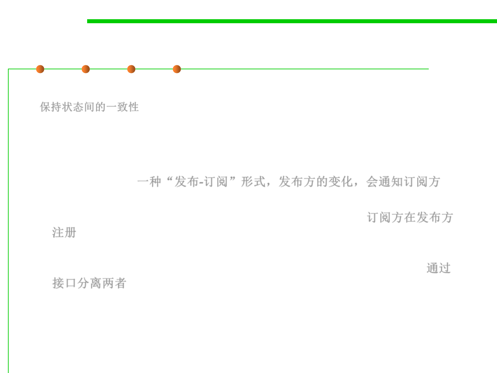

Observer pattern
6.2 Design Patterns for Maintainability
▪ Problem: Dependent’s state must be consistent with master’s state
保持状态间的一致性
▪ Solution:
– The Observer Design Pattern allows you to have a publisher-subscriber
framework where a change to a publisher will notify all of its subscribers
automatically. 一种“发布-订阅”形式，发布方的变化，会通知订阅方
– The subscribers are registered to the publisher so that when a change
occurs in the publisher all of the subscribers are notified. 订阅方在发布方
注册
– The publishers and the subscribers are decoupled through the use of
interfaces so that the development of each can vary independently. 通过
接口分离两者